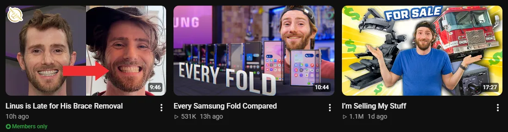
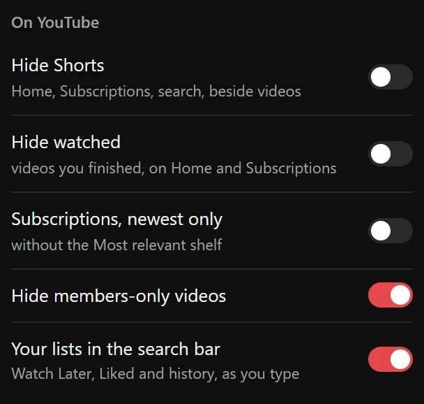

Guide 07·Members only
How to hide members-only videos on YouTube.
Updated 14 November 2026
Short answer
Members-only videos carry a green Members only badge and can't be watched unless you pay to join that channel. YouTube has no setting to hide them. Needle adds one: switch on Hide members-only videos and they're gone from Home, Subscriptions, search and the videos beside the one you're watching. A channel's own page still shows them.
01·On YouTube
What YouTube gives you
A members-only video is one a channel only shows to people who pay its monthly membership. Everyone else sees it in their feeds anyway, with a small green Members only badge under the title and no view count, and clicking it gets a page asking you to join.

YouTube has no setting to stop showing them to you. The ⋮ menu's Not interested asks Home for fewer like that one video, and does nothing for Subscriptions, where they turn up whenever a channel you follow posts one.
02·With Needle
Hide them with Needle
- Click Needle's icon in your browser's toolbar.
- Under On YouTube, switch on Hide members-only videos.
- They're gone from Home, Subscriptions, search and the videos beside the one you're watching, straight away and on every page after.

03·What counts
What it hides, and what it leaves
- Hides: videos marked Members only on Home, on your Subscriptions page, in search results and beside the video you're watching.
- Leaves: a channel's own page and its Membership tab, where you went to see that channel. And movies to buy or rent, whose badge is a different one.
Off by default, like everything Needle changes on YouTube's own pages: nothing disappears until you ask.
04·Combine it
Clear out the rest too
The switches beside it do the same for other things your feeds fill up with: Shorts, videos you've already watched, and the Most relevant shelf in the middle of Subscriptions. And if it's one channel you're done with, Mute channel takes all of its videos out, everywhere.
05·Questions
Questions?
Can you hide members-only videos on YouTube?
Not with a YouTube setting. The ⋮ menu's Not interested works one video at a time, and only on Home. Needle's switch hides every one of them.
What if I'm a member of the channel?
Its members-only videos go too, since they carry the same badge. Open the channel's own page to see them: Needle leaves channel pages alone. Or switch it off.
Does it hide movies to buy or rent?
No. Those carry a different badge, and Needle tells them apart. It only hides videos marked Members only.
Does it work without signing in?
Yes. It goes by the badge YouTube puts on the video, so it needs no account.
Does it work if my YouTube isn't in English?
Yes. It goes by the badge's icon, not its words.
Is it free?
Yes. No account, no trial, no paid tier.